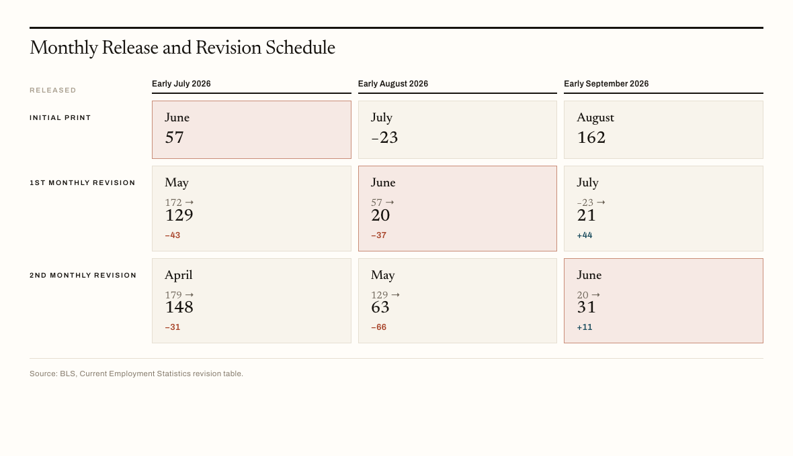
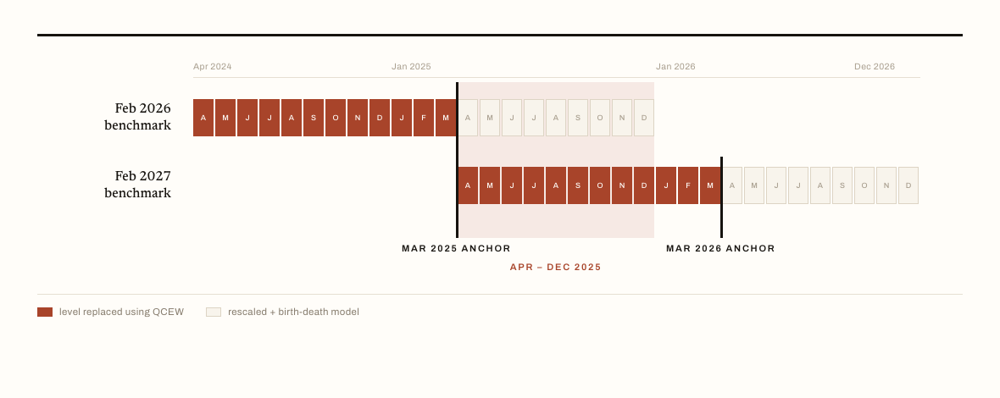
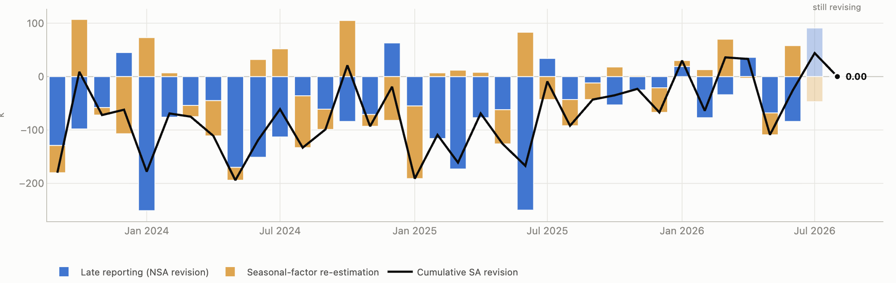

| CES | QCEW | |
|---|---|---|
| Source | Sample survey, UI-derived frame | Near-census of UI tax records |
| Units covered | ~119,000 firms / ~622,000 worksites | ~12.1 million establishments |
| Employment covered | ~26% of nonfarm payroll jobs | ~97% of in-scope nonfarm employment |
| Frequency | Monthly | Quarterly |
| Lag | ~3 weeks | within 6 months |
Understanding the Nonfarm Payroll Data
labor market
nonfarm payroll
Basic Information, Release Schedule, Revisions, Seasoonal Adjustment, and more
Nonfarm payrolls may be the most closely watched indicator of the U.S. labor market. However, the sophisticated statistical methodology the measure makes it rather hard to interpret beyond the headline. This post attempts to provide an overview, as well as to shed light on some technical details about the indicator, especially regarding the revisions and seasonal adjustment.
I. What the number is
- Definition: Nonfarm payroll employment counts paid employees on the payrolls of nonfarm establishments, a group that accounts for roughly 80% of the workers who contribute to U.S. GDP.1
- Source & frequency: The Bureau of Labor Statistics (BLS) collects the data from private businesses and government agencies on a monthly basis and usually publishes it on the first Friday of each month at 8:30 a.m. ET.
- Reference period: A person counts as employed if they worked or received pay for any part of the pay period that includes the 12th day of the month.2
- The measure excludes: “sole proprietors, the unincorporated self-employed, unpaid volunteer or family workers, farm workers, and domestic workers,” along with active-duty military personnel.3
Why are certain groups excluded?
- Agriculture.
- CES draws its sample from administrative records held by state unemployment insurance (UI) agencies, so workers outside the UI system never enter the sampling frame in the first place. Agricultural labor is widely exempt from UI coverage requirements.
- Farms are also frequently family-owned and run by sole proprietors, who are out of scope for an establishment survey whether or not they are covered.4
- And agriculture is small. Farm employment runs at roughly 0.9–1.2% of total employment,5 so a sample large enough to measure it reliably would cost far more than the resulting estimate is worth.
- None of this means farm employment goes unmeasured. The U.S. Department of Agriculture surveys agricultural labor twice a year.
- Active-duty military. Payrolls are built to track employment that moves with the business cycle. Military headcount moves with national defense requirements instead, so including it would add variation unrelated to what the series is for.
- Sole proprietors and private household employees. CES is an establishment survey. The self-employed have no employer filing a payroll on their behalf, and a private home is not a business establishment. Both groups are captured instead by the household survey (CPS) — part of why payroll employment and household employment can move in opposite directions in the same month.
II. How the number is obtained
Sources of data
Two BLS programs measure the same thing at different speeds, and the relationship between them explains most of what follows.
The Quarterly Census of Employment and Wages (QCEW) is assembled from the unemployment insurance tax reports that essentially every employer is required to file with its state. It is close to a census: in 2025 it covered 12.1 million establishments and 155.7 million employees.6 About 97% of nonfarm employment within the scope of the establishment survey is covered by UI, and therefore visible to BLS through QCEW records.7 The price of that completeness is speed. QCEW is quarterly, and each quarter is published within six months of the quarter’s end.8
The BLS also runs the Current Employment Statistics (CES) survey, which is a monthly sample drawn from that same UI-derived universe, covering about 119,000 businesses and government agencies and approximately 622,000 individual worksites, roughly 26% of all nonfarm payroll jobs.9 CES reports about three weeks after the reference period rather than six months after the quarter.
Below is a comparison table of the two surveys.
Source: BLS, Employment Situation Technical Note (August 2026); CES National Benchmark Article; Employment and Wages, Annual Averages 2025; QCEW Overview.
The sample from the CES has one defect that no amount of additional response will fix. A survey drawn from an existing frame cannot see firms that did not exist when the frame was drawn, and it cannot readily tell a firm that has gone out of business from one that simply has not answered this month. Both problems concern the same population, and BLS handles them together with the net birth-death model.
The birth-death model
Imputation. BLS “excludes employment losses due to business deaths from sample-based estimation in order to offset the missing employment gains from business births.” In practice, “not reflecting sample units going out of business and imputing to them the same trend as the other firms in the sample.”10 BLS says this step “accounts for most of the birth and death employment.”
An ARIMA model on the residual only, estimating “the residual birth-death employment not accounted for by the imputation,” fitted on the trailing five years.11
A Falling Response Rate
| Year | Overall response rate | Collected at 1st release | Collected at final release |
|---|---|---|---|
| 2016 | 60.8 | 74.7 | 95.7 |
| 2019 | 59.3 | 73.9 | 93.2 |
| 2022 | 45.2 | 65.4 | 94.0 |
| 2025 | 42.2 | 65.2 | 91.5 |
| 2026 | 43.3 | 63.0 | — |
Source: BLS Office of Survey Methods Research. Annual averages, percent.
The share of units answering has fallen roughly 18 points since 2016. The share of employment collected by final closing has barely moved. Both are true because collection is employment-weighted: the large employers still report. What the survey is losing is small establishments, which is the same population the birth-death model is extrapolating over.
Seasonal adjustment
Seasonal adjustments make it easier to determine whether an employment change is due to normal changes throughout the year or an indicator of anomalies. For example, This is a regular seasonal fluctuation, which is reflected in the NSA data, but more hiring or less hiring in this case does not suggest expansion nor recession.
- The question seasonal adjustment answers is “what does a normal January look like?” X-11, the engine inside X-13, answers it by averaging, not by fitting a model. Take the same calendar month across several years and average it. Divide it out of the raw series and what is left is trend plus noise. Smooth that to get a cleaner trend, take the trend back out, re-estimate the monthly pattern on the cleaner residual, and go round again.
- Two things follow directly from averaging rather than fitting. First, every new observation changes the average, so last January’s factor moves when this January arrives. Second, the newest months sit at the end of the sample with no future to average over, so X-13 forecasts the series forward and averages over the forecast.
- CES runs this concurrently: factors are recomputed every month with the latest data rather than fixed in advance, and the models are re-specified annually.12 X-13 wraps X-11 in a regARIMA step that first strips out outliers, trading-day effects and moving holidays (CES adjusts for Easter and Labor Day) so the averaging is not contaminated by them.
- The seasonally adjusted history changes every month even when not one additional survey response arrives
| January | Unadjusted | Adjusted | Adjustment |
|---|---|---|---|
| 2023 | −2,505 | +517 | +3,022 |
| 2024 | −2,635 | +353 | +2,988 |
| 2025 | −2,852 | +143 | +2,995 |
| 2026 | −2,649 | +130 | +2,779 |
Source: author’s calculations from ALFRED vintages of PAYEMS and PAYNSA. Thousands, as first published.
III. How the number changes
Three structurally different operations all get called a revision, and they have different causes, sizes and meanings.
| What we’ll hear | What BLS calls it | What drives the change |
|---|---|---|
| initial print | first preliminary estimate | — |
| first monthly revision | second preliminary estimate | late survey responses |
| second monthly revision | final estimate / third closing | late survey responses |
| the big revision | preliminary benchmark estimate | QCEW, March anchor only |
| annual benchmark revision | final benchmark | QCEW + rescaling + birth-death |
Source: BLS, CES Frequently Asked Questions.
The terminology seems very obscure. The terms are easier to hold onto once we sort them by the data sources behind them.
The first three rows all rest on the CES sample. Each is built from whatever survey responses have arrived by the time of publication, which is exactly what “preliminary” means here. That is, the data are open to change as the rest of the sample reports. The last two rows rest on QCEW instead. That is why they arrive once a year rather than once a month, and why they reset the level of employment rather than nudging a single month’s change.
Two of the official labels can seem misleading, as there are two “finals”. The “final estimate” is final only in that no further monthly revision is coming, but the benchmark still is. And the benchmark figure that makes the news is almost always the preliminary benchmark, which is itself revised by the “final benchmark” the following February.
This post uses the terms in the first column throughout. The naming is based on my interpretation of each data. The BLS names are the official ones, but they are harder to keep straight.
The monthly cycle
CES “revises its initial monthly estimates twice, in the immediately succeeding 2 months, to incorporate additional sample receipts from respondents in the survey.”13 For example, the June NFP data has its initial print in early July. In early August, not only does BLS release the initial print of the July NFP data, but it also release the first monthly revision of the June data, as well as the second monthly revision of the May data. In early September, when the August NFP is released, June receives its second monthly revision.

Source: BLS, Current Employment Statistics revision table.
The annual benchmark
The final benchmark is published with the January preliminary estimates in early February, and affects 21 months of previously published data, anchored to March of the previous year.14

Source: BLS, CES Frequently Asked Questions; BofA Global Research, QCEW: 2025 FAQs, 3 September 2025.
The 12 months up to the March anchor get the QCEW revision, and the 9 months after it are only rescaled and re-modelled. BofA states that April–December 2025 payrolls “will not be revised based on the QCEW until 2027.”15 So a payroll number is roughly eighteen months old before anyone checks it against tax records.
Decomposition of Revisions
The decomposition is arithmetic on two vintages of the same month:
\underbrace{\text{SA}_{\text{latest}} - \text{SA}_{\text{first}}}_{\text{total revision}} \;=\; \underbrace{\text{NSA}_{\text{latest}} - \text{NSA}_{\text{first}}}_{\text{data: late responses}\,+\,\text{benchmark}} \;+\; \underbrace{\;\text{residual}\;}_{\text{seasonal-factor re-estimation}}
The unadjusted series never touches a seasonal factor, so anything that moves it is incoming data. Whatever is left when you subtract that from the adjusted revision is the adjustment changing its mind.

Source: author’s calculations from ALFRED vintages. Total nonfarm, thousands.
- The drift is data. Mean total revision −61k; mean data component −50k, mean factor component −11k. Payrolls have been revised down persistently, and late reporting plus the benchmark explains most of it.
- The noise is not. Mean absolute factor component is 48k against 71k for data, and the factor component is the larger of the two in 20 of 47 months.
- The two pull in opposite directions in 26 of 47 months (correlation −0.46). The published revision routinely understates how much actually moved underneath it.
Questions worth further exploration
Is the CES sample shrinking, and does it matter? The August 2026 technical note puts the sample at 119,000 businesses and 622,000 worksites, against 121,000 and 631,000 a year earlier, which is a decline of roughly 1.5%. Over the same period the stated coverage moved from “about one-third” of nonfarm payroll jobs to “approximately 26 percent.” A 1.5% reduction in the sample cannot produce a shift of that size, so either the denominator changed or BLS restated the basis. This is a separate question from ?@tbl-response because that one is about who answers, this one is about how many are asked. The worry is that if the sample really is contracting, the standard error on every monthly print is widening.
Can the adjustment be reproduced? The seasonal adjustment tool X-13ARIMA-SEATS is public. The Census Bureau distributes the binary and the seasonal package wraps it in R.
Footnotes
Federal Reserve Bank of St. Louis, All Employees, Total Nonfarm (PAYEMS). https://fred.stlouisfed.org/series/payems↩︎
BLS, CES Frequently Asked Questions. https://www.bls.gov/web/empsit/cesfaq.htm↩︎
BLS, Handbook of Methods: Current Employment Statistics — Concepts. https://www.bls.gov/opub/hom/ces/concepts.htm↩︎
BLS, Why doesn’t CES collect agricultural employment? https://www.bls.gov/web/empsit/cesfaq.htm↩︎
USDA Economic Research Service, Ag and Food Sectors and the Economy. https://www.ers.usda.gov/data-products/chart-gallery/58282↩︎
BLS, Employment and Wages, Annual Averages 2025. https://www.bls.gov/cew/publications/employment-and-wages-annual-averages/current/↩︎
BLS, CES National Benchmark Article. https://www.bls.gov/web/empsit/cesbmart.htm↩︎
BLS, QCEW Overview. https://www.bls.gov/cew/overview.htm↩︎
BLS, Employment Situation Technical Note, August 2026. https://www.bls.gov/news.release/empsit.tn.htm↩︎
BLS, CES Net Birth-Death Model. https://www.bls.gov/web/empsit/cesbd.htm↩︎
BLS, CES Net Birth-Death Model. https://www.bls.gov/web/empsit/cesbd.htm↩︎
BLS, CES Seasonal Adjustment. https://www.bls.gov/web/empsit/cesseasadj.htm↩︎
BLS, CES Frequently Asked Questions. https://www.bls.gov/web/empsit/cesfaq.htm↩︎
BLS, CES Frequently Asked Questions. https://www.bls.gov/web/empsit/cesfaq.htm↩︎
BofA Global Research, US Economic Viewpoint — QCEW: 2025 FAQs, 3 September 2025.↩︎